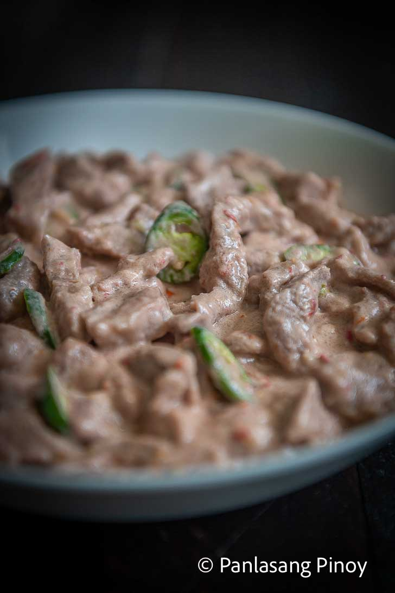

Text (I added some minor changes) and image from
Panlasang Pinoy's Bicol Express Recipe.

Description
The mild sweetness of coconut milk brings a sense of delight to the
sharp notes of chili pepper and bagoong in the classic Bicol Express
recipe. This contrast has long created a spell-binding richness in taste
for the dish. And this has helped make it arguably one of the most
popular Filipino dishes.
Ingredients
- 2 lbs. pork belly sliced into strips
- 2 cups coconut milk
- 2 cups coconut cream
- 1/2 cup shrimp paste bagoong alamang
- 4 cloves garlic crushed
- 6 pieces Thai chili pepper chopped
- 1 thumb ginger minced
- 1 piece onion chopped
- 1 pieces Serrano pepper sliced
- 1 cup water optional
Steps
-
Combine coconut milk, onion, ginger, garlic, and pork in a cooking
pot. Stir. Turn the heat on and let the coconut milk boil. Cover the
pot and continue to boil in medium heat until the liquid reduces to
half. Note: Stir the mixture every 7 minutes to prevent lumps from
forming.
-
Add balaw or bagoong alamang, chili peppers, coconut cream, and Knorr
pork cube. Stir. Continue to boil until the coconut milk reduces to
your desired consistency.
- Transfer to a serving bowl. Serve. Share and enjoy!